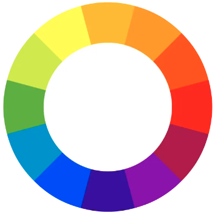

Entenda o que é Círculo Cromático e Psicologia das Cores
O que é um Círculo Cromático?
Costuma ser dividido em 12 cores, com seus respectivos tons, as quais são visualizadas pelo olho humano.
Este conjunto de cores é dividido em 3 grupos, cores primárias, secundárias e terciárias. Nas cores primárias, estão as cores amarelo, azul e vermelho. As cores secundárias são a mistura de duas cores primárias, já as cores terciárias, é a mistura entre cores primárias e secundárias.
Podemos definir 2 subgrupos de cores, as frias e quentes. Frias estão dispostas do violeta até o amarelo-esverdeado, já as quentes, do amarelo até o vermelho-arroxeado.
Abaixo, irá ser apresentado alguns modos para a seleção de cores:
- Complementares: são extremamente opostas (amarelo e violeta);
- Análogas: não possuem muito contraste (azul-arroxeado, violeta e vermelho-arroxeado);
- Análogas e uma Complementar: duas cores extremamente opostas, a qual uma terá suas cores análogas (violeta (azul-arroxeado e vermelho-arroxeado) e amarelo);
- Análogas relacionais: duas cores análogas, pula uma e utiliza a próxima (amarelo, amarelo-alaranjado,
laranjae vermelho-alaranjado);- Intercaladas: pega uma cor, pula uma, utiliza a próxima, e assim por diante (amarelo, laranja e vermelho);
- Triádicas: pegar uma cor, pular 3 e utilizar a próxima. Irá formar um triângulo (amarelo, vermelho, azul);
- Quadrado: pegar uma cor, pular 2 e pegar a próxima. Irá formar um quadrado (amarelo, vermelho-alaranjado, violeta e azul-esverdeado);
- Tetraédricas: utilizar duas cores e seus extremos opostos. Formará um triângulo (verde, vermelho, laranja e azul);
- Monocromia: utilizar apenas uma cor, alterando apenas a saturação e a luminosidade.
A escolha dos tons corretos é fundamental para transmitir a personalidade para o cliente. Podemos citar, por exemplo, sites de tecnologia, que utilizam a cor azul, presente no site da Intel, HP, Dell e IBM. Se formos comparar o círculo cromático com a psicologia das cores, é possível notar que existe uma diferença entre elas. Como foi explicado até este ponto sobre o círculo cromático, a seguir será exibido a definição da psicologia das cores.
Vídeo sobre o Círculo Cromático:
O que é a Psicologia das Cores?
A psicologia das cores é o estudo que busca compreender o comportamento dos seres humanos à presença de cores. O estudo desta psicologia busca compreender como serão as emoções geradas pelas cores nos pensamentos dos seres humanos.
Podemos notar que esta influência está muito presente nos meios de Marketing e Publicidade, causando um impacto no consumidor, estimulando-o a adquirir o produto/serviço.
Podemos notar que, para cada uma das situações citadas acima possui seu objetivo. O círculo cromático determina a paleta de cores ideais para se utilizar na aplicação, e a psicologia das cores está ligada diretamente com o objetivo de impactar o cliente a consumir o produto/serviço.
Vídeo sobre a Psicologia das Cores: